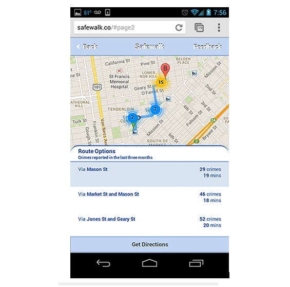

Safewalk
Hackathon, Mobile App
2nd Place winner at the AT&T Mobile Hackathon. I with one other developer, designed and developed Safewalk, a mobile app that provides users recommendations on the safest walking route to their destination based on crime reports.
During a trip to San Francisco, I was ambushed and robbed. When I spoke to the police, they informed that crime rates had been rising in the union square area. Unfortunately I was new to the area, and current mapping programs don't readily provide this information so I wasn't aware.
This motivated me to build Safewalk so people traveling to new areas or looking to move to a new location can be made aware of the safety of the area.

Safewalk provides users crime statistics and time information at the street level so users chooses the best route based on crime and speed.
-

User enters the route

Route recommendations

Blue indicates safer spots

Step by step route information